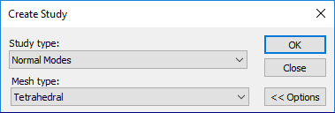
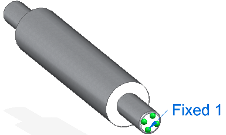
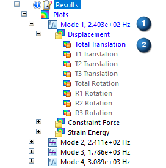
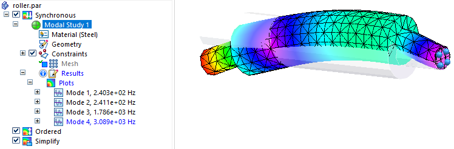
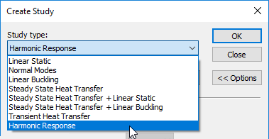
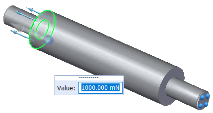
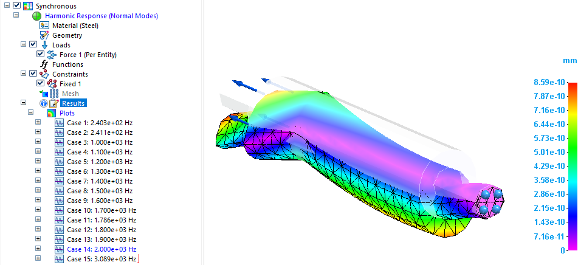
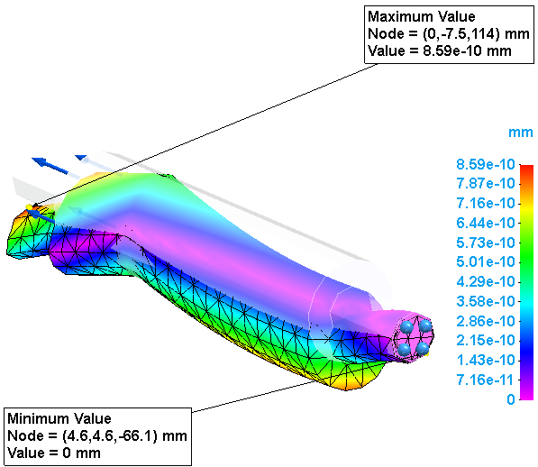

Define a harmonic frequency response study
Use the following process to define and review a harmonic response study, which is a type of structural study that evaluates the effects of vibration over a period of time and at known oscillatory frequencies. You can use the results to predict whether your product, equipment, or structure can withstand the prolonged effects caused by vibration, such as resonance, fatigue, and displacement.
When the analysis is solved, you can determine the steady state response at multiple frequencies by reviewing the displacement plots, probing the results, and examining the Frequency vs. Translation graphs.
This example shows a part model, roller.par. It demonstrates how to use the natural frequencies from a normal modes study as input to the harmonic response study. This is optional, however. You can skip directly to the section, Create and solve a harmonic response study.
Create and solve a normal modes study.
This example shows how you can use the results of a normal modes study—the frequencies at which the object vibrates naturally, before external forces are applied—as input to a harmonic response study. This enables you to limit the harmonic response solution to those frequencies identified in the normal modes study.
-
Select the Simulation tab→New Study command. In the Create Study dialog box, from the Study type list, select Normal Modes, and then select the appropriate Mesh type for your model. Click OK to accept all of the default options for this type of study.

Note:The study geometry is selected automatically in a part or sheet metal model with one body. For an assembly or a multibody part model, select the study geometry using the Define command.
A new container for a Modal Study is created in the Simulation pane.
-
Apply a constraint as a boundary condition for the modal analysis. This example uses a fixed constraint.
A normal modes study does not use loads, only constraints.

-
Mesh and solve the modal analysis.
A normal modes analysis solves for the eigenvalues (1) and eigenvectors (2) of the model, and displays them in the Simulation pane, under Plots.

For each eigenvalue (natural frequency), there is a corresponding eigenvector (mode shape of deformation). These are shown as plots in the Simulation Results environment.
Example:Using the default options for a normal modes study, four modal frequencies and mode shapes are identified in the results. These represent the natural frequencies at which the model vibrates freely. Expand each mode to view the mode shape plots, which show the deformations at each frequency.

Create and solve a harmonic response study.
Use the frequencies found in the normal modes study—Mode 1, Mode 2, Mode 3, Mode 4—as input to a harmonic response study. You can test the results of the normal modes study by applying a load value that you know will cause vibration, to see how much deformation occurs. The objective is to compare the resonance frequencies of the model to its natural frequencies. Resonance occurs when a dynamic load frequency coincides with one of the natural frequencies and causes displacements and stresses.
Although resonance may be a desired result in some applications, for safety and structural integrity applications, the resonance frequencies should not match the natural frequencies.
Structural damping, which you specify as an input to the harmonic response study, limits the response of the design to excessive resonance by shifting the timing of peak loads and peak frequencies.
Creating the harmonic response study in the same document as the normal modes study enables you to reference the modal frequency results.
-
In the same document, create a new study, and from the Study type list, select Harmonic Response.

Note:Harmonic response studies require an advanced simulation license.
-
In the Options: Harmonic Frequency Analysis dialog box, define the study processing parameters.

-
Modal Result Frequencies section—Use the options in this section when a previously solved normal modes study is available in the current document.
-
Select the Add modal frequencies option, and from the adjacent list, select the modal study to use.
-
Select the Show Modes... button.
-
In the Frequency Table from Modal Results dialog box, review the frequencies from the normal modes study that are listed in the Selected modal frequencies column. If there are frequencies that you do not want to include in the harmonic response study, use the arrow keys to move them from the right column to the left column. You can target a specific frequency to investigate, or select a low to high range. Click OK.
In this example, all four modal frequencies were included in the harmonic frequency response analysis. This does not affect the simulation results values, only the number of results produced.
 Tip:
Tip:It is possible that not all of the computed modes are required in the modal frequency response solution. Often, only the lowest few suffice for dynamic response calculation. At a minimum, all the modes whose resonant frequencies lie within the range of forcing frequencies should be retained. For example, if your product design requires the frequency response analysis must be between 100 and 1000 Hz, all modes whose resonant frequencies are in this range should be retained. This guideline is only a minimum requirement, however. For better accuracy, all modes up to at least two to three times the highest forcing frequency should be retained. For example, if a structure is excited to between 100 and 1000 Hz, all modes from 0 to at least 3000 Hz should be retained.
-
-
Use the Solution Frequencies section if you do not have a previously solved normal modes study to reference, or if you want to add specific additional frequencies to the results of your normal modes study.
This example was created using the default settings, so we cleared the Solution frequencies check box.
-
Frequency Response section—Specify how to apply a structural damping force to account for energy that is dissipated due to friction. Structural damping mitigates the displacement response of a structure or design.
-
To apply a constant damping ratio, select the Structural damping coefficient option, and either accept or change the default value of 0.010.
The Structural damping coefficient option and default value were used for these examples.
-
To apply structural damping that varies in intensity at different modal frequencies, select the Modal damping table option, and then click New to define a Frequency vs. Structural Damping function table. For more information, see Harmonic response studies.
-
-
-
Click OK to close the Options: Harmonic Frequency Analysis dialog box and return to the Create Study dialog box.
-
In the Create Study dialog box:
-
If you are defining a study for an assembly, you can automatically create the connectors needed for meshing and solving based on the assembly mate relationships. Select the appropriate options in the Connector Options section of the Create Study dialog box. For more information, see Assembly connectors.
-
Click OK to initiate the harmonic response study.
Tip:Creating a new harmonic response study opens the Options: Harmonic Frequency Analysis dialog box automatically. To change the study parameters after you create the study, select the Modify Study shortcut command to open the Create Study dialog box, and click the Harmonic Response Options button.
-
-
Select the same study geometry that you used in the normal modes study.
-
Select the Force command to apply a structural load to define the external force to excite the model.

Tip:To create a variable force load with respect to the frequency modes in the harmonic response study, you can select the Create Function button on the command bar, and then define a time versus factor table. The function is applied automatically when the study is processed. For more information, see Harmonic response studies.
-
Apply the same constraint as a boundary condition for the harmonic response analysis as you did for the normal modes analysis.
-
Mesh and solve the harmonic response analysis.
Review harmonic response study results.
When the study is solved, the results are shown in the Simulation Results environment. The default plot in the last modal case result set is displayed. Each case set contains the results at a specific frequency. You can review the displacement result plot for the output increments to find the areas of highest displacement.
To quickly identify the frequency results set (case) with the maximum displacement values, look in the Results section of the Simulation Report. Minimum and maximum values for each case are listed in tabular format.
Case 14 contains the highest displacement results at 2,000 Hz.

Use the following steps to review the result cases to see the structure's response at several frequencies, and to obtain a graph of the response quantity (displacements or constraint forces and moments) versus frequency. You can identify the peak responses on the graph and review the stresses at those peak frequencies.
-
Display the result plots for other output increments. You can do this using the lists in the Home tab→Data Selection group.
-
Use the Result Mode list to choose a specific results increment, or use the arrows to cycle through each plot produced at each frequency.
-
From the Result Type list, choose Displacement or Constraint Force.
-
From the Result Component list, choose the specific result plot, such as translation, rotation, constraint force, or constraint moment.
You also can display these plots using the Simulation pane. Expand the Results→Plots→Increment sets to view each displacement and constraint force plot produced at the specified frequencies intervals. The result plot that is currently displayed is identified in blue text in the Simulation pane. If a plot is listed in black or gray text, you can double-click it to display it.
-
-
To quickly locate the maximum and minimum values, on the Color Bar tab→Show group, select the Min Marker and Max Marker check boxes.
You can use this information as input to the Probe command.

-
Graph the results. Use the Home tab→Probe command to select one or more nodes in the results. Select the matching values in the Probe table and click the Show Graph button.
Note:Oscillatory loading is sinusoidal in nature. In its simplest case, this loading is defined as having amplitude at a specific frequency. The steady-state oscillatory response occurs at the same frequency as the loading. However, a dynamic load frequency that coincides with one of the natural frequencies can cause large displacements and stresses. Structural damping limits the response of the design to excessive resonance by shifting the timing of peak loads and peak frequencies.
-
Select the Home tab→Output Results group→Create Report command
 to create a report of all of the simulation results.
to create a report of all of the simulation results. This saves the study analysis parameters, the values used to define the harmonic response boundary conditions, the resulting displacement result plots, and any Frequency vs. Translation graphs you explicitly saved to the simulation results file (.ssd file). It also includes your conclusions for review by others.
How do I
Verify simulation material propertiesCreate a study
Create a study using a simplified model
Define a coupled study for thermal stress analysis
Assign units in studies
Define and review a transient heat study
Learn more
Creating and using studiesUsing materials in studies
Modifying studies
Structural studies
Thermal studies
Using steady state heat transfer studies
Coupled studies
Harmonic response studies
Create and solve a study using GD optimized model
Create and solve a study using an STL model
Defining thermal studies
Look up more details
Create Study (or Modify Study) dialog boxTransient Heat Options dialog box
Options: Harmonic Frequency Analysis dialog box